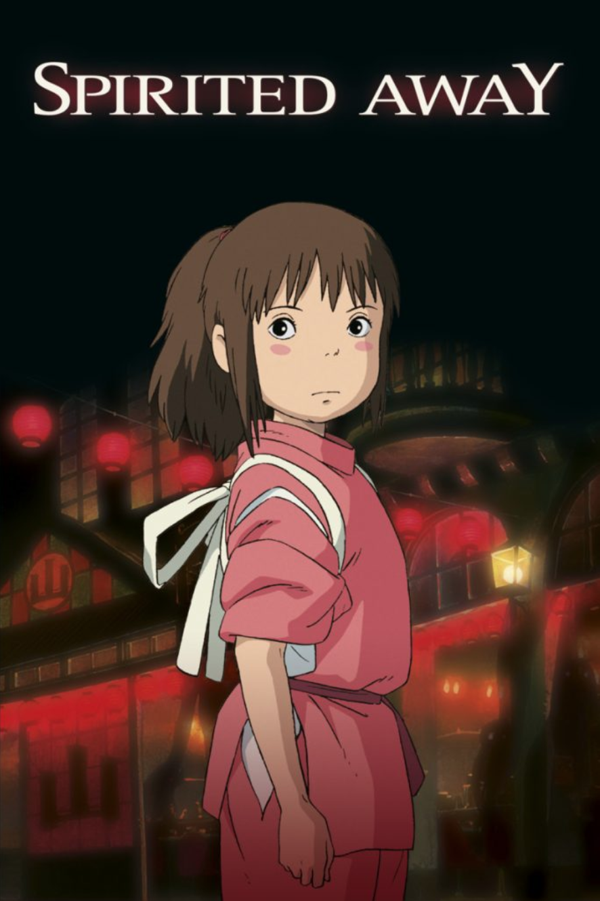

Director: Hayao Miyazaki
Released: 2001
Starring: Rumi Hiiragi, Miyu Irino, Mari Natsuki, Takeshi Naito, Yasuko Sawaguchi, Tsunehiko Kamij, Takehiko Ono, Bunta Sugawara
Spirited Away tells the story of Chihiro Ogino (Hiiragi), a sullen ten-year-old girl who, while moving to a new neighborhood, enters the spirit world. After her parents are transformed into pigs by the witch Yubaba (Natsuki), Chihiro takes a job working in Yubaba’s bathhouse to find a way to free herself and her parents and return to the human world. It won the Academy Award for Best Animated Feature at the 75th Academy Awards.